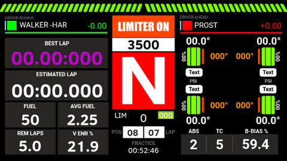
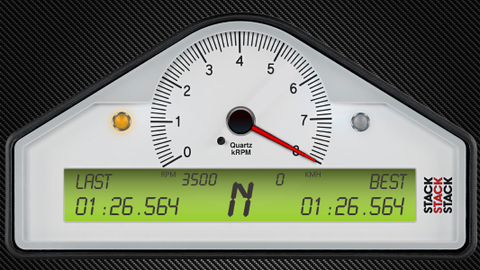
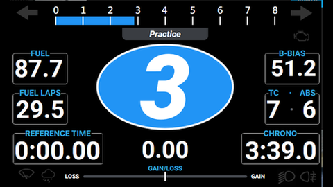
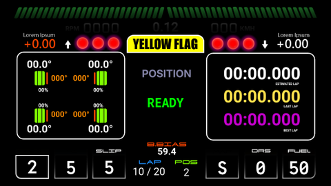
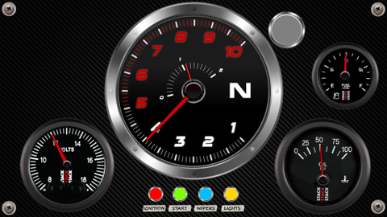
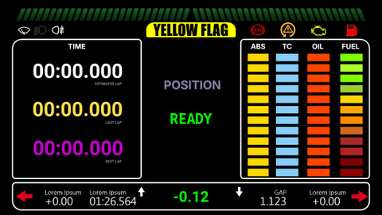

Modern · GT
PRD01
Inspiré du tableau de bord SPC d'iRacing, enrichi de nombreuses fonctions : G-mètre, données de télémétrie, classement et bien d'autres.
TéléchargerUne collection de tableaux de bord pour SimHub, du plus épuré au plus complet, avec des designs modernes ou classiques. Un clic sur un modèle, et tu le télécharges.
Dans Pit Box, les modèles sont rangés par style : tous, modernes ou classiques. Chaque carte mène au téléchargement, plus bas sur cette page.

Six modèles, gratuits. Télécharge le fichier .simhubdash, puis double-clique dessus : SimHub l'installe.

Inspiré du tableau de bord SPC d'iRacing, enrichi de nombreuses fonctions : G-mètre, données de télémétrie, classement et bien d'autres.
Télécharger
Un dashboard à aiguille inspiré des célèbres instruments STACK, présents à bord de nombreuses monoplaces.
Télécharger
Un design simple avec les informations essentielles pour affronter les spéciales de rallye.
Télécharger
Un dashboard numérique sur un seul écran, avec toutes les informations essentielles.
Télécharger
Un dashboard analogique avec toute une panoplie d'instruments à aiguilles.
Télécharger
L'esprit de l'instrumentation d'origine de la Renault Sport RS01, avec un affichage numérique lisible d'un coup d'œil.
Télécharger| Point | Ce qu'il faut savoir |
|---|---|
| Installation | Télécharge le modèle, puis double-clique dessus : SimHub l'ajoute à tes tableaux de bord. |
| Écrans | Un écran de PC, un écran secondaire, une tablette ou un écran de volant reconnu par SimHub. |
| Assetto Corsa | Les autres voitures ne sont connues que si les applications Python sont activées dans le jeu. |
Les huit modules, la vidéo et l'installation.